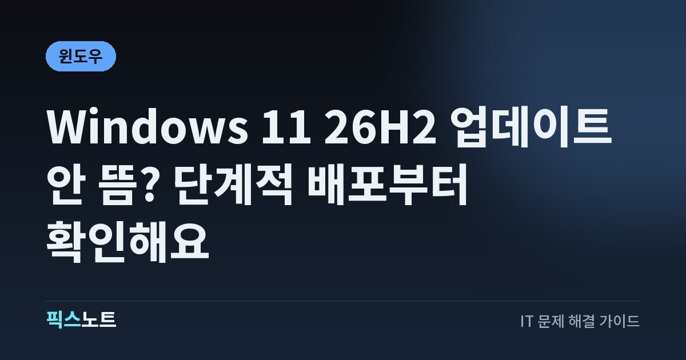

Windows 11 26H2 업데이트 안 뜸? 단계적 배포부터 확인해요
Windows 11 26H2가 안 보일 때 단계적 배포, 업데이트 우선 수신 설정, 보류 여부를 확인해요.

Windows 11 26H2가 일반 배포 단계에 들어갔어도 모든 PC에 같은 날 표시되는 건 아니에요. Microsoft는 대상 기기에 순차적으로 제공하고 있으며, 호환성 문제가 있는 장치에는 보호 보류가 걸릴 수도 있다고 안내해요. 업데이트가 안 보일 때 강제 설치부터 하기보다 현재 버전과 Windows Update 상태를 먼저 확인해요.
26H2가 안 보여도 바로 오류라고 보기는 어려워요
Microsoft의 Windows 11 26H2 릴리스 상태 페이지에는 26H2가 일반 제공 단계에 들어갔지만 배포 범위를 몇 달에 걸쳐 넓힌다고 안내돼 있어요. 같은 Windows 11을 쓰는 PC라도 하드웨어 구성, 드라이버, 지역, 업데이트 설정에 따라 표시 시점이 다를 수 있어요. 그래서 다른 사람의 PC에는 26H2가 보이는데 내 PC에는 없다는 이유만으로 Windows Update가 고장 났다고 단정하면 안 돼요. 현재 PC가 24H2나 25H2 같은 지원 대상 버전을 쓰는지, 누적 업데이트가 밀려 있지는 않은지, 재부팅이 필요한 상태는 아닌지부터 확인해요. Microsoft가 배포 대상을 넓히는 중이라면 별다른 조치를 하지 않아도 나중에 자동으로 표시될 수 있어요.
먼저 현재 Windows 버전과 업데이트 상태를 확인해요
업데이트가 안 보일 때는 현재 버전과 설치 대기 상태를 같이 확인하는 게 좋아요. 기능 업데이트는 누적 업데이트나 재부팅이 밀린 상태에서 바로 제안되지 않을 수 있고, 회사나 학교 PC는 관리 정책 때문에 일반 소비자 PC와 표시 방식이 다를 수도 있어요.
- 설정에서 Windows Update를 열고 보류 중인 업데이트가 있는지 확인해요.
- 설치가 끝난 업데이트가 재부팅을 요구하면 먼저 재부팅해요.
- 시스템 정보에서 현재 Windows 11 버전이 무엇인지 기록해요.
- 다시 Windows Update에서 '업데이트 확인'을 눌러 26H2가 제안되는지 봐요.
- 조직에서 관리하는 PC라면 업데이트 정책이 따로 적용되는지 관리자에게 확인해요.
이 순서로 기본 상태를 정리하면 단순 대기 상태와 실제 차단 상태를 구분하기 쉬워져요.
최신 업데이트 우선 수신 설정이 켜져 있는지 봐요
Microsoft는 '사용 가능한 최신 업데이트를 받는 즉시 받기' 설정을 켠 대상 기기가 새로운 비보안 업데이트나 기능을 더 빨리 받을 수 있다고 안내해요. 26H2 릴리스 상태 안내에서도 이 설정을 켠 24H2·25H2 기기부터 배포가 진행될 수 있다고 설명해요. Windows Update 화면에 해당 스위치가 보인다면 켠 뒤 업데이트 확인을 다시 해볼 수 있어요. 다만 이 설정을 켠다고 해서 모든 PC에 26H2가 즉시 나타나는 것은 아니에요. 호환성 확인이나 단계적 배포 대상 선정은 여전히 적용될 수 있어요. 업무용 PC처럼 안정성이 더 중요한 환경에서는 조직의 업데이트 정책을 우선해야 하고, 관리자가 기능 업데이트 시점을 정하고 있다면 개인 설정만으로 바뀌지 않을 수 있어요.
호환성 보호 보류가 걸리면 기다려야 할 수 있어요
Microsoft는 특정 드라이버나 앱, 하드웨어와 기능 업데이트 사이에 문제가 확인되면 보호 보류를 적용할 수 있어요. 이 경우 해당 구성이 있는 PC에는 문제가 해결될 때까지 새 기능 업데이트가 제공되지 않을 수 있어요. 사용자는 '왜 내 PC만 안 뜨지'라고 느낄 수 있지만 실제로는 업데이트 실패가 아니라 의도적인 차단일 수 있어요. 특히 최근 오디오, 그래픽, 저장장치 드라이버 이슈처럼 특정 구성에서만 문제가 생기는 경우라면 배포가 늦어질 수 있어요. 보호 보류가 의심될 때 레지스트리 수정이나 비공식 우회 방법으로 억지로 설치하면 Microsoft가 피하려던 호환성 문제를 그대로 만날 수 있어요. 릴리스 상태 페이지의 알려진 문제와 내 장치 구성이 겹치는지 확인하고, 해결 상태가 바뀌는지 보는 편이 나아요.
업데이트가 보이지 않을 때 확인 순서를 지켜요
Windows Update가 정상인지 확인할 때는 한 번에 여러 설정을 바꾸지 않는 게 좋아요. 단계별로 확인하면 어떤 조치가 실제로 영향을 줬는지 알 수 있어요.
- 인터넷 연결이 안정적인지 확인하고 Windows Update를 다시 열어요.
- 남아 있는 누적 업데이트를 설치하고 PC를 재부팅해요.
- 최신 업데이트 우선 수신 설정이 필요한지 확인해요.
- 26H2 릴리스 상태의 알려진 문제와 보호 보류 항목을 확인해요.
- 그래도 제안되지 않으면 며칠 뒤 다시 확인해요.
- 회사·학교 PC라면 관리자 정책으로 기능 업데이트가 미뤄진 것은 아닌지 확인해요.
이 과정에서 오류 코드가 따로 나오면 단순히 '26H2가 안 뜨는 문제'와는 다른 Windows Update 오류일 수 있으니 그 코드부터 처리하는 게 맞아요.
설치 도구를 쓰기 전에 보호 보류 여부부터 봐요
Microsoft는 기능 업데이트를 수동으로 설치할 수 있는 여러 방법을 제공하지만, Windows Update에 보이지 않는다는 이유만으로 곧바로 수동 설치를 선택하는 건 권하지 않아요. 특히 보호 보류가 걸린 장치라면 호환성 문제가 아직 해결되지 않았다는 뜻일 수 있어요. 현재 PC가 중요한 작업용이거나 복구가 번거로운 환경이라면 Windows Update에서 공식적으로 제안될 때까지 기다리는 편이 부담이 적어요. 수동 설치를 검토하더라도 먼저 중요한 파일을 백업하고 BitLocker 복구 키가 필요한 환경인지 확인해요. 드라이버와 BIOS를 무조건 최신으로 바꾸는 것도 좋은 접근은 아니에요. 제조사 지원 페이지에서 현재 모델에 권장되는 버전인지 확인하고, 문제 해결 목적 없이 여러 드라이버를 동시에 바꾸지 않는 편이 좋아요.
며칠 뒤에도 안 보이면 기록을 남겨 원인을 나눠요
26H2가 계속 안 보인다면 현재 Windows 버전과 OS 빌드, Windows Update 화면의 메시지, 최근 설치된 드라이버나 보안 프로그램, 조직 관리 여부를 적어 두세요. 다른 PC와 비교할 때는 모델명뿐 아니라 CPU와 주요 드라이버 구성이 다른지도 봐야 해요. Windows Update에 오류 코드가 없고 기존 업데이트는 정상인데 26H2만 안 보인다면 단계적 배포나 보호 보류일 가능성을 먼저 생각할 수 있어요. 반대로 업데이트 확인 자체가 실패하거나 누적 업데이트도 설치되지 않는다면 별도의 Windows Update 오류를 해결해야 해요. Microsoft 릴리스 상태 페이지는 알려진 문제가 해결되거나 새 보류가 생기면 갱신되므로, PC 설정을 크게 바꾸기 전에 그 상태가 변했는지 다시 확인하는 게 가장 깔끔해요.
자주 묻는 질문
Windows 11 26H2가 일반 배포라는데 왜 제 PC에는 안 뜨나요?
일반 배포가 시작됐어도 모든 PC에 동시에 제공되는 것은 아니에요. Microsoft는 배포 대상을 단계적으로 늘리고, 호환성 문제가 확인된 구성에는 보호 보류를 적용할 수 있어요. 오류 코드가 없다면 먼저 단계적 배포와 보류 가능성을 확인해요.
최신 업데이트를 빨리 받는 설정을 켜면 바로 26H2가 뜨나요?
반드시 바로 뜨는 것은 아니에요. 해당 설정은 대상 기기가 최신 비보안 업데이트와 기능을 더 빨리 받을 수 있게 하지만, 장치 호환성 확인과 보호 보류는 그대로 적용될 수 있어요. 켠 뒤에도 보이지 않으면 배포 대상이 될 때까지 기다릴 수 있어요.
26H2가 안 뜨면 수동 설치 도구를 써도 되나요?
수동 설치 자체는 가능할 수 있지만, Windows Update에 표시되지 않는 이유가 보호 보류라면 우회 설치로 호환성 문제를 만날 수 있어요. 중요한 PC라면 릴리스 상태와 알려진 문제를 먼저 확인하고 공식 제안이 올 때까지 기다리는 편이 안전해요.
회사나 학교 PC는 왜 업데이트가 더 늦게 뜰 수 있나요?
조직에서 Windows Update 정책으로 기능 업데이트 시점을 늦추거나 특정 버전을 유지하도록 설정할 수 있어요. 이런 PC는 개인용 장치와 배포 일정이 다를 수 있으니 업데이트 설정을 임의로 바꾸기보다 관리자 정책을 먼저 확인해요.